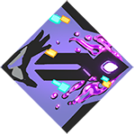
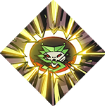

Unused values in TraitData.lua, sorted alphabetically¶
AmmoFieldTrait¶

My Two Cents¶
y'know Lightning Rod, the Artemis/Zeus boon? this is that, but for dionysus. i'm not entirely sure why it has a zeus icon.
this boon icon is not used in the game normally, but is also used by the unused
WrathDamageBuffTrait.
Notes¶
- Source: Zeus? Dionysus?
- Functional: dubious
ArtemisShoutBuffTrait¶
My Two Cents¶
boosts artemis' call to have a bonus 3%/4.5%/6%/7.5% critical chance. this one seems reasonable, i wonder why it was cut?
Notes¶
- Source: Artemis
- Functional: could be, but the duration for the effect is
0, so it might be DOA.
BowRandomExplosionTrait¶
Helptext¶
Firework Stance
Holding Attack creates miniblasts nearby that deal 30 damage.
My Two Cents¶
a firework-themed daedalus upgrade for the bow. sweet!
Notes¶
- Source: Daedalus
- Functional: presumably
- See Also:
LimitedTimeTrait
CriticalStunTrait¶
My Two Cents¶
provides a 1/1.5/2.5/2.7 second stun on critting an enemy.
Notes¶
- Source: Artemis
- Functional: presumably
DionysusAoETrait¶

My Two Cents¶
increases the radius of dionysus' cast by 100/150/250/270 units, up from a base of
400. interestingly, this also tells theDionysusShoutWeapon'sDamageRaduisto have the same value as what we just boosted - which is odd because, in the game's current form, that doesn't even have a damage radius!
Notes¶
- Source: Dionysus
- Functional: presumably, not sure about the shout part
HealthBonusTrait¶
My Two Cents¶
provides a
MaxHealthbonus of 20/30/40/50.fun fact, i almost skipped this assuming it was
Tough Skin, or perhapsSpiked Collar, until i checked and realized it's not referenced anywhere else.
Notes¶
- Source: unclear
- Functional: presumably
- icon missing, unreferenced
LimitedTimeTrait¶
My Two Cents¶
this is a template trait with nothing but
LimitedTime = true, which seems kind of uninteresting until you look into what that does. a better term for these traits are Seasonal traits - which seem to be or have been for a New Year's event or something along those lines. they're firework-themed!
Notes¶
- Functional: presumably
- See Also:
MarkedDropGoldTrait¶
Helptext¶
Wanted Dead
You earn Coin for the first Marked foe you slay in each Encounter. Marked Kill Reward: 20/30/40/50
My Two Cents¶
this is so cool. it's even commented out in the
LinkedUpgradespart of her lootdata! shame it was cut - maybe the bonus gold was just too much.
Notes¶
- Source: Artemis
- Functional: presumably
OnEnemyDeathDefenseBuffTrait¶
My Two Cents¶
this trait gives zag a 30% damage reduction buff for 5 seconds every time an enemy dies. i can see why it was removed
Notes¶
- Source: Poseidon
- Functional: missing
RarityLevels, so maybe not - icon missing
OnSpawnSwordTrait¶
My Two Cents¶
when an enemy spawns, it has a 50% chance of having a
SpawnDelayDamageeffect which deals huge damage after1.1secs. damage range: 50-150/75-225/100-300/125-375.looks like an ares boon - and rather powerful one at that. just going off of association, though.
Notes¶
- Source: unclear
- Functional: presumably
- icon missing, unreferenced
ReducedEnemySpawnsTrait¶
My Two Cents¶
provides a
SpawnMultiplierof 0.8/1.2/1.6/2.0, reducing enemy spawns by 20% at common rarity, but boosting them by 20%/60%/100% at higher rarities. i assume this would've been fixed if the trait were properly implemented.
Notes¶
- Source: unclear
- Functional: presumably
- unreferenced
RetainTempHealthTrait¶
My Two Cents¶
all i can say is that this is a teir-1 trait. it has no other fields, and is not referenced anywhere else in the code.
Notes¶
- unreferenced, icon missing
RoomAmmoTrait¶
My Two Cents¶
i have no idea what this is supposed to do. it has
RoomAmmoRestore = 3, but that field is never mentioned anywhere else in the code and i really can't infer its effect from the name either.
Notes¶
- Source: Artemis
- Functional: none that i can tell.
- unreferenced
ShieldLoadAmmo_DionysusRangedTrait¶

Helptext¶
Trippy Flare
Your Cast damages foes around you, leaving behind Festive Fog.
Blast Damage: 100/120/140/160
My Two Cents¶
this may look a little familiar - that's because it is! getting dionysus' Trippy Flare is totally natural in-game, but you're not actually getting this trait. instead, you're getting his normal
DionysusRangedTrait, which has aTraitDependencyTextOverridesfield that changes the helptext when you have the Beowulf aspect!in fact, it's even in the loot tables for poseidon - but, this trait has a
Skipfield set totrue. there's only one other trait with this field, but quite a few elements of removed early-access content have this value. when such an element is considered by the game, this field tells the game to literally skip it and try another option!
Notes¶
- Source: Dionysus
- Functional: presumably
- See Also:
ShieldLoadAmmo_PoseidonRangedTrait
ShieldLoadAmmo_PoseidonRangedTrait¶

Helptext¶
Flood Flare
Your Cast damages foes around you and knocks them away.
Blast Damage: 60/90/120/150
My Two Cents¶
this may look a little familiar - that's because it is! getting poseidon's Flood Flare is totally natural in-game, but you're not actually getting this trait. instead, you're getting his normal
PoseidonRangedTrait, which has aTraitDependencyTextOverridesfield that changes the helptext when you have the Beowulf aspect!in fact, it's even in the loot tables for poseidon - but, this trait has a
Skipfield set totrue. there's only one other trait with this field, but quite a few elements of removed early-access content have this value. when such an element is considered by the game, this field tells the game to literally skip it and try another option!
Notes¶
- Source: Poseidon
- Functional: presumably
- See Also:
ShieldLoadAmmo_DionysusRangedTrait
ShieldThrowSingleTargetTrait¶

Helptext¶
Burst Flight
Hold Special to throw rapidly, dealing area damage on impact.
My Two Cents¶
a firework-themed daedalus upgrade for the shield. sweet!
Notes¶
- Source: Daedalus
- Functional: presumably
- See Also:
LimitedTimeTrait
SlamStunTrait¶
My Two Cents¶
like the actually-used Breaking Waves boon (aka
SlamExplosionTrait), this has the fieldAddOnSlamWeapons = {"PoseidonCollisionBlast"}. it differs by adding 3/4.5/6/7.5 second stun instead of an explosion, which feels kind of busted.
Notes¶
- Source: Poseidon
- Functional: presumably
SpearSpinChargeExplosions¶
Helptext¶
Firework Spin
Holding Attack creates miniblasts nearby that deal {TooltipDamage} damage.
My Two Cents¶
a firework-themed upgrade for the spear, in line with the other Seasonal traits. unfortunately, this entry is a bit of a lie, though - it only exists in the helptext! there's no traitdata for it! my best guess is that it was modified into the final game's
SpearSpinChargeAreaDamageTrait, akaFlaring Spin. shame.
Notes¶
- Source: Daedalus
- Functional: nonexistent
- See Also:
LimitedTimeTrait
SwordRandomExplosionTrait¶
Helptext¶
Firework Slash
Your Attack create a miniblast nearby that deals 30 damage.
My Two Cents¶
a firework-themed daedalus upgrade for the sword. sweet!
Notes¶
- Source: Daedalus
- Functional: presumably
- See Also:
LimitedTimeTrait
WrathDamageBuffTrait¶

My Two Cents¶
this trait has a unique
DamagePerSuperStockfield, which provides a percent bonus to damage output based on how full your God Gauge is.this boon icon is not used in the game normally, but is also used by the unused
AmmoFieldTrait.
Notes¶
- Source: Zeus
- Functional: presumably
to be continued
i don't feel like counting my progress, oh well
inaccuracy disclaimers:¶
- i am one person
- level scaling lists assume max rolls where there's a range on the multiplier